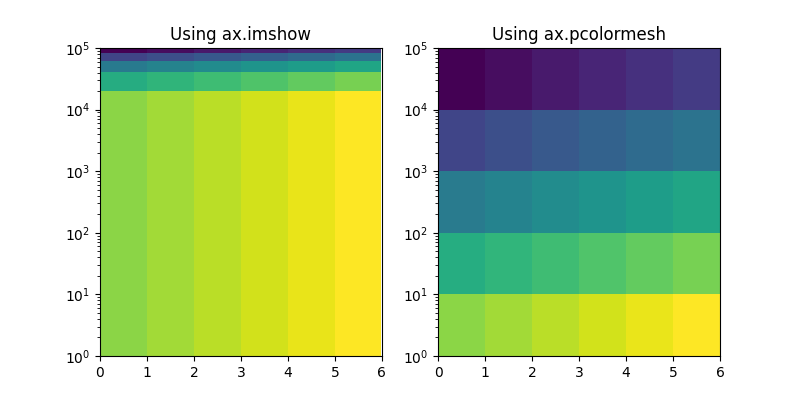

New in matplotlib 2.0¶
Note
matplotlib 2.0 supports Python 2.7, and 3.4+
Default style changes¶
The major changes in v2.0 are related to overhauling the default styles.
Improved color conversion API and RGBA support¶
The colors gained a new color conversion API with
full support for the alpha channel. The main public functions are
is_color_like(), matplotlib.colors.to_rgba(),
matplotlib.colors.to_rgba_array() and to_hex().
RGBA quadruplets are encoded in hex format as "#rrggbbaa".
A side benefit is that the Qt options editor now allows setting the alpha channel of the artists as well.
New Configuration (rcParams)¶
New rcparams added
Parameter |
Description |
|---|---|
|
format string for 'year' scale dates |
|
format string for 'month' scale dates |
|
format string for 'day' scale dates |
|
format string for 'hour' scale times |
|
format string for 'minute' scale times |
|
format string for 'second' scale times |
|
format string for 'microsecond' scale times |
|
default marker for scatter plot |
|
see note |
|
Control where major and minor ticks are drawn.
The global values are |
|
The default number of bins to use in
|
|
Whether the line dash patterns should scale with linewidth. |
|
Minimum number of digits saved in tick labels that triggers using an offset. |
Added svg.hashsalt key to rcParams¶
If svg.hashsalt is None (which it is by default), the svg
backend uses uuid4 to generate the hash salt. If it is not
None, it must be a string that is used as the hash salt instead of
uuid4. This allows for deterministic SVG output.
Removed the svg.image_noscale rcParam¶
As a result of the extensive changes to image handling, the
svg.image_noscale rcParam has been removed. The same
functionality may be achieved by setting interpolation='none' on
individual images or globally using the image.interpolation
rcParam.
Qualitative colormaps¶
ColorBrewer's "qualitative" colormaps ("Accent", "Dark2", "Paired",
"Pastel1", "Pastel2", "Set1", "Set2", "Set3") were intended for discrete
categorical data, with no implication of value, and therefore have been
converted to ListedColormap instead of LinearSegmentedColormap, so
the colors will no longer be interpolated and they can be used for
choropleths, labeled image features, etc.
Axis offset label now responds to labelcolor¶
Axis offset labels are now colored the same as axis tick markers when labelcolor is altered.
Improved offset text choice¶
The default offset-text choice was changed to only use significant digits that are common to all ticks (e.g. 1231..1239 -> 1230, instead of 1231), except when they straddle a relatively large multiple of a power of ten, in which case that multiple is chosen (e.g. 1999..2001->2000).
Style parameter blacklist¶
In order to prevent unexpected consequences from using a style, style files are no longer able to set parameters that affect things unrelated to style. These parameters include:
'interactive', 'backend', 'backend.qt4', 'webagg.port',
'webagg.port_retries', 'webagg.open_in_browser', 'backend_fallback',
'toolbar', 'timezone', 'datapath', 'figure.max_open_warning',
'savefig.directory', 'tk.window_focus', 'docstring.hardcopy'
Change in default font¶
The default font used by matplotlib in text has been changed to DejaVu Sans and DejaVu Serif for the sans-serif and serif families, respectively. The DejaVu font family is based on the previous matplotlib default --Bitstream Vera-- but includes a much wider range of characters.
The default mathtext font has been changed from Computer Modern to the DejaVu
family to maintain consistency with regular text. Two new options for the
mathtext.fontset configuration parameter have been added: dejavusans
(default) and dejavuserif. Both of these options use DejaVu glyphs whenever
possible and fall back to STIX symbols when a glyph is not found in DejaVu. To
return to the previous behavior, set the rcParam mathtext.fontset to cm.
Faster text rendering¶
Rendering text in the Agg backend is now less fuzzy and about 20% faster to draw.
Improvements for the Qt figure options editor¶
Various usability improvements were implemented for the Qt figure options editor, among which:
Line style entries are now sorted without duplicates.
The colormap and normalization limits can now be set for images.
Line edits for floating values now display only as many digits as necessary to avoid precision loss. An important bug was also fixed regarding input validation using Qt5 and a locale where the decimal separator is ",".
The axes selector now uses shorter, more user-friendly names for axes, and does not crash if there are no axes.
Line and image entries using the default labels ("_lineX", "_imageX") are now sorted numerically even when there are more than 10 entries.
Improved image support¶
Prior to version 2.0, matplotlib resampled images by first applying the colormap and then resizing the result. Since the resampling was performed on the colored image, this introduced colors in the output image that didn't actually exist in the colormap. Now, images are resampled first (and entirely in floating-point, if the input image is floating-point), and then the colormap is applied.
In order to make this important change, the image handling code was almost entirely rewritten. As a side effect, image resampling uses less memory and fewer datatype conversions than before.
The experimental private feature where one could "skew" an image by
setting the private member _image_skew_coordinate has been
removed. Instead, images will obey the transform of the axes on which
they are drawn.
Non-linear scales on image plots¶
imshow now draws data at the requested points in data space after the
application of non-linear scales.
The image on the left demonstrates the new, correct behavior.
The old behavior can be recreated using pcolormesh as
demonstrated on the right.
(Source code, png, pdf)
{kind=link}

This can be understood by analogy to plotting a histogram with linearly spaced bins with a logarithmic x-axis. Equal sized bins will be displayed as wider for small x and narrower for large x.
Support for HiDPI (Retina) displays in the NbAgg and WebAgg backends¶
The NbAgg and WebAgg backends will now use the full resolution of your high-pixel-density display.
Change in the default animation codec¶
The default animation codec has been changed from mpeg4 to h264,
which is more efficient. It can be set via the animation.codec rcParam.
Deprecated support for mencoder in animation¶
The use of mencoder for writing video files with mpl is problematic; switching to ffmpeg is strongly advised. All support for mencoder will be removed in version 2.2.
Boxplot Zorder Keyword Argument¶
The zorder parameter now exists for boxplot. This allows the zorder
of a boxplot to be set in the plotting function call.
boxplot(np.arange(10), zorder=10)
Filled + and x markers¶
New fillable plus and x markers have been added. See
the markers module and
marker reference
examples.
rcount and ccount for plot_surface¶
As of v2.0, mplot3d's plot_surface now
accepts rcount and ccount arguments for controlling the sampling of the
input data for plotting. These arguments specify the maximum number of
evenly spaced samples to take from the input data. These arguments are
also the new default sampling method for the function, and is
considered a style change.
The old rstride and cstride arguments, which specified the size of the evenly spaced samples, become the default when 'classic' mode is invoked, and are still available for use. There are no plans for deprecating these arguments.
Streamplot Zorder Keyword Argument Changes¶
The zorder parameter for streamplot now has default
value of None instead of 2. If None is given as zorder,
streamplot has a default zorder of
matplotlib.lines.Line2D.zorder.
Extension to matplotlib.backend_bases.GraphicsContextBase¶
To support standardizing hatch behavior across the backends we ship
the matplotlib.backend_bases.GraphicsContextBase.get_hatch_color
method as added to matplotlib.backend_bases.GraphicsContextBase.
This is only used during the render process in the backends we ship so
will not break any third-party backends.
If you maintain a third-party backend which extends
GraphicsContextBase this method is now
available to you and should be used to color hatch patterns.